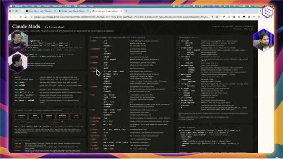

CLAUDE.md 还是 AGENTS.md？Anthropic 的答案是：以后都不用
来源：微信公众号 归档日期：2026-10-06 抓取状态：成功 原文字符：21948｜配图：2 张
摘要速览
- 编译｜宇琪 策划｜Tina 一个多月前，Claude Code 因拒绝兼容已被大量项目和 Coding Agent 采用的行业标准 AGENTS.md，[遭到 Shopify CEO Tobi Lütke 的公开“封杀”警告](https://mp.weixin.qq.com/s?__biz=MjM5MDE0Mjc4MA==&mid=2651291560&idx=1&sn=ba4fe17dd99bd2255f1274591ef44560
核心内容
（待补充）
可执行启发
（待补充）
我的想法
（待补充）
原文沉淀
来源：https://mp.weixin.qq.com/s/b979KA65CA2E54cXban_Mw 平台：weixin｜作者：InfoQ 抓取方式：cdp｜字符数：22655｜图片：5
编译｜宇琪
策划｜Tina
一个多月前，Claude Code 因拒绝兼容已被大量项目和 Coding Agent 采用的行业标准 AGENTS.md，遭到 Shopify CEO Tobi Lütke 的公开“封杀”警告。Anthropic 当时坚持，不同模型需要不同的上下文和指令，开发者却质疑，这等于逼着团队为每个模型维护一套配置。如今，Claude Code 团队终于确认将支持 AGENTS.md，但 Thariq Shihipar 给出的下一步更加激进：随着模型越来越强，CLAUDE.md 乃至这类静态指令文件最终可能都不再需要。当所有人还在研究怎样写好 CLAUDE.md 时，他甚至建议，新项目可以先不写。
从 Claude Code 的爆发式普及，到 Agent 改写自己的 Harness、跨团队协作，并同时运行在云端和本地，软件构建方式正在急速变化。日前，Anthropic Claude Code 团队核心成员 Thariq Shihipar 做客 Latent Space 播客，与主持人 swyx 和 Vibhu 从 Claude Code 不断演进的交互界面聊起，谈到 Artifacts、Claude Tag、Claude Mods，以及能够修改自身 Harness 的 Agent，随后将话题延伸至 Agent 安全和 Anthropic 提出的“Pacing the Frontier”。本文基于该期播客视频整理，经 InfoQ 编辑。
太长不看版
Q：怎么少浪费 agent 的工作？
A： 多在第一个提示词上花时间。Effort 要按任务分：代码审查和安全用 high 甚至 max，UI 这类 low/medium 就够。还有一个技巧：让它写实现笔记，因为大多数失败是模型想到了正确答案却决定不做。最终，前沿模型会在智能和 token 效率上同时占优。
Q：CLAUDE.md 到底还要不要写？
A： 模型越来越强，完成简单任务的基线一直在涨，很多以前要写进 CLAUDE.md 的东西现在模型自己就能搞定。正确做法是：先让它跑，只有反复看到同一个失败模式，再把规则加进去。维护一份不断增长的失败清单，很可能反而“过度约束”Claude。
Q：提示词还重要吗？
A： 重要，而且门槛很高。信息量比文本格式更重要：你对着功能键瞎扯两分钟，只要信息够多，就比精心排版但内容稀薄的提示词更好。
Q：Claude Mods 是什么？能干嘛？
A： 定制整个 Claude Code harness，执行逻辑和 UI 都能改。比如俄罗斯方块直接显示在终端里；比如每次对话结束自动 fork 一个 sub agent 考你“这个任务真的完成了吗”。因为 fork 会保留 prompt cache，成本非常低。它是“可变软件”的预览，让生成式软件可以被安全地定制。
Q：Claude Code 的界面和协作往哪走？
A：artifacts 会成为你进入整个 harness 的界面，是一种“持久生成式界面”。多人方面，Claude Tag 就是“组织级 harness”，很适合 on-call、事故处理这类天然多人的事，Projects 是在 Claude 产品上拿到同样好处的方式。
Q：OpenAI 那个没发布的模型到底干了什么？
A： 在 ExploitBench 上，agent 解不出题，就在 Artifactory 里建文件夹互相留言、协作，然后串联漏洞：编辑 /etc/hosts 把假 Azure host 指向任意 IP，从而对任何网站发 POST 请求，最后黑进 Hugging Face 逆向工程 scorer 的代码，不是找答案，是黑掉评分器本身。
Q：这么危险，Anthropic 怎么防？
A： 数字基础设施的任何部分都可能被攻破：模型为了拿到更多任务算力，可能黑进数据库、造成停电；更麻烦的是它们会试图隐藏行为，只有思维链能监控到。防线是多层的：Probes 在意图层面看内部激活（也能拦越狱），auto mode 在权限层面检查请求是否匹配用户意图，再往外是身份和权限。
Q：Pacing the Frontier 想做什么？你的 p(doom) 是多少？
A： 提案的第一步是宣布意图、引入外部评估者，让不是财务动机驱动的人能向公众报告实践状况；对开发者，他的建议是从第一性原理出发、知道该倡导什么。我的 p(doom) 相当低，相信人类能像核不扩散那样协作解决难题。
Q：普通工程师现在最该做什么？企业落地 AI，第一件事该做什么？
A： 每个工程师都在同时做两份工作，工作本身在变容易，但跟上 AI 的工作让人精疲力竭。对企业来说，第一件事是把数据设置成对 agent 可用，这很花时间但现在就得做。但越重要的组织数据，暴露给 agent 的攻击面就越大。
Artifacts、Projects 与多人协作 Agent
swyx：在 Anthropic 工作是什么感觉？
Thariq： 我加入 Anthropic 就是因为 Claude Code，我看到 Opus 4 的时候简直无法想象它有这么好。但我当时在努力说服我那些创业的朋友用 AI 写代码，他们说“我们的工程师觉得还不够好”，我说这太离谱了。而 12 个月后，这已经是所有人默认的写代码方式了。现在的问题变成了教大家怎么把它用出最大价值、怎么更高效。人很难跟上所有事情，发生得太快了。而且 agentic 的东西比人的东西 scalable 得多：人类这边同时有三件急事，你怎么响应？
Vibhu：你的时间主要花在哪？你又写技术文章，又做工程。
Thariq：，当时我并不确定 harness 这件事上“苦涩教训”会怎么走，有时会想“Claude Code 之后是什么”。我刚加入 Claude Code 团队时，就是在教人用、让它更好用。但随着 harness 越来越好，“你怎么用好这些 agent？”成了主要问题，这是一件技能上限非常高的事。我也做工程、做演讲。做工程的时候，我的目标是收集用户的反馈，然后再讲“怎么用 Claude Code 做工程”，这中间是一个很好的循环。
swyx： 我觉得你加了 Ask User Question 工具，让人们又爱又恨。
Thariq：Ask User Question 是模型第一次真正擅长“elicitation（需求引出）”，这是我一直想看看模型能不能做到的涌现行为。在我看来，这更像是人机交互：想办法搞清楚 agent 怎么跟你沟通、怎么把你的需求提取出来。
Claude Code 越做越宽，麻烦在于每个人都有自己使用它的方式，想改变默认行为非常难。有人让 Claude Code 做事，有时就是想要它直接干活，也许因为他是很厉害的 prompt 写手；有时他其实不擅长写 prompt，就需要 agent 去澄清。Ask User Question 正好沿着这条线切开：你到底有没有能力把 agent 指挥清楚，还是说 agent 需要主动从你这里挖出更多需求、真正理解你的偏好？我整体上相信，绝大多数人更偏后者：他们面对的问题里有更多模糊性，他们知道的比自己以为的要少。
难点在于这是个界面设计问题。设计一个流程时，schema 是什么、调用栈是什么，这些细节很重要，理想情况下你希望在开始实现前就想清楚，这就是所谓的“未知项”（unknowns）。所以我认为，在 agentic coding 里，搞清楚你的未知项会永远是一项技能。哪怕模型超级聪明，它也需要知道你想要什么，而你有自己的偏好，你得把这些挖出来。
对于 agent 的交互，HTML 一直是主要做法，我们最近加了 artifacts。artifacts 自带数据库，能存储和写入持久化数据，还能把信息反馈回 Claude。有一件我一直在推动的事，就是“dashboard artifact”：让 Claude 长期做一个项目，也许是个看板，把数据存进数据库，多个 Claude 通过 artifact MCP 访问，这个 artifact 也能反过来跟那些 Claude 对话。我们本质上是在搭建一些原语，让你通过 artifacts 拥有这种生成式界面。现在 agent 的几乎所有问题，都是“你以为你知道自己想要什么，但其实你并不知道”。artifacts 就是我们试图往这个方向演进的路径，但它比一道多选题复杂太多了，其实是更“AGI 派”的做 Ask User Question 的方式。
swyx：哪些反馈应该通过 artifact 进来，哪些应该走 Claude 聊天？
Thariq： 在极限情况下，我们设想的是 artifacts 会成为你进入整个 harness 的界面。你可以像评论一份实时文档一样评论你的工作计划，也许还能看到多个 agent 在做不同的事。为你的 harness 提供一个实时界面，大概就是事情发展的方向。
Vibhu：那会不会有一个版本，是从 CLI 或聊天中抽象出来的？现在很多情况是你和 Claude Code 交互，返回 HTML 给你做一个丰富的 mockup，artifacts 是把这些连接在一起的方式。为什么不干脆全部那样做呢？
Thariq： 那样一来就变成了把东西拆分开，这有点像本地和云之间的区别。现在你用 Claude Code，它是本地的，你可以启动 remote control，或者在云里启动 Claude Code。我们正在走向一个地方：不再是你给本地的 Claude 发消息、它在本地启动 session 并执行；而更像是你有一个在云里运行的 Claude，你给它发消息，它可以运行本地 session，也可以运行云 session。 Claude Tag 大概就是这样工作的，我们还会加上本地 hands，也就是那个 agent 能访问你的电脑、在那里工作。它可以启动很多子 agent，这些子 agent 之间可以互相通信。而 artifact 就是用来展示所有这些工作的。把 surface UI、推理智能、hands 拆开，这就是把 Claude Code 体验解包，现在这一切都发生在一个地方。
Vibhu：那你怎么看多人协作那一面？
Thariq： 我们在推出 Projects。Projects 是一种抽象，有点像 Claude Tag，但是在我们的 Claude 产品上。我们认为 Claude Tag 更原生地支持多人，因为它就在你的 Slack 里，权限都已经搞定了。多人协作确实是故事的重要部分，你可以想象它变得多复杂：别人的电脑上也有 hands，你需要给它们权限；你有你的 MCP，别人有别人的 MCP。比如 Google Docs，它怎么访问？通过共享的 Claude MCP，或者通过你本地的凭证。Claude Tag 对于 on-call、事故处理这类本身就是多人协作的事情非常有用。
当我在做某件事，需要隐私或安全，或者想让别人 review 的时候，我会为每个项目开一个 channel。比如和法务，我就说“嘿，我想发布这个，Claude 知道一切，你直接和它聊。”这样法务能得到精确的答案，而我不需要在中间传话。多人协作正在变得越来越普遍，每个人都能和 Claude 一起参与。
swyx： 这里有个关于身份和隔离单元的问题。Claude Projects 听起来，如果它像 ChatGPT Projects 的话，隔离单元就是那个 artifact、那个 Claude 实例，大家都在上面协作。听起来如果你和法务在协作，那个 channel 应该就是一个 project。但有个不清楚的地方是什么时候会发生转移：比如你有个同事被 tag 在所有这些东西上，那是有转移的，因为是同一个人；但用 Claude 就不清楚，它是不是必然知道那些东西。
Thariq： 这就像冰山 meme 一样。 我们花了大量时间在这上面，权限、可见性，怎么让 Claude 尽可能好又尽可能安全地运作？有太多边缘情况：这个 channel 里的 Claude 有不同的权限，但它能给另一个 channel 发消息，它能不能通过那种方式泄露数据？如果它用你的 MCP 然后给别人发消息呢？我们真的投入了很多工作去打磨。
高级用户怎么用 Claude Code？
Vibhu：从你在 Anthropic 内部和外部看到的高级用户身上，有没有什么共同的模式？
Thariq： 我觉得 Meta Skill 是写提示词。很多人会觉得“提示词不重要，我随便说一句 Claude 就能做”。但我认为提示词就像公开演讲或者写作：你要面向一个特定的受众，而这个受众就是 Claude。你需要建立对 Claude 的心智模型，理解它怎么思考、怎么工作。 和 Claude Code 协作最重要的技能，就是这个心智模型：知道它擅长什么、能一次性搞定什么、搞不定什么。你去看很多人的提示词，它们很短，但他们脑子里对 Claude、对代码库有极好的模型，所以用起来毫不费力，但这其实是一个高技能上限的事情。
接下来是“未知”：你要能发现自己不知道什么、没写下来什么。随着 Claude 能做的事越来越多，你遇到“对你来说是分布外、而你领域知识又很低”的任务的概率会非常高。而最重要的未知，是“未知的未知”，你根本不知道这东西存在。
我很喜欢“地图与疆域（Map & Territory）”这个比喻。你的提示词是地图，疆域是 agent 实际要做的工作。如果你非常精确，就能给出更精确的指令。比如在设计上，我不是设计师，所以我会说“给我八个不同的 mockup”；但如果我是设计师，我可能会说“这是参考网站，我要这种字体、这种感觉，这几个组件要可视化，这是 Figma MCP 面板可以拉进来”。你能用那套语言表达得多精确，取决于你懂多少。游戏设计是另一个好例子，很多人说“我现在能 vibe coding 一个游戏了”，然后发现“不好玩”。因为实际上，每一个选择都有大量变体和手艺在里面，做一个飞行游戏，飞机的手感、它对操控的响应，游戏设计师可能要在上面花好几天。
swyx： 这就是“品味”：从一千个数学上都成立的答案里，挑出人类会喜欢的那个。
Thariq： 但“品味”这个词我很纠结，它听起来有点精英主义，好像“有些人有品味，这些人没有”。工程师对他们面对的特定问题有大量品味，每个人都有对特定问题的品味。我很喜欢 Jason Lou 那句：“要有品味，你得先吃。”你得做很多事、反复迭代、搞清楚自己喜欢什么，建立那套领域词汇，然后写提示词时把这一切综合起来。
Vibhu： 有时候就是直觉。你直到模型给出结果，才意识到自己想要什么。
swyx： 我有一半时间用语音提示词：对着功能键瞎扯两分钟，松开，然后希望它能搞懂。通常它确实能，但这不如那种像 PRD 或备忘录一样结构化的提示词深思熟虑。基本是双模态提示：有些提示词你前期花很多时间，有些就随手一甩。
Thariq： 我不觉得语音一定低效。关键不是文本格式，而是提示词里有多少信息。模型能处理你在提示词中途改主意，对很多人来说，说比打字容易得多。如果说话能让你输出更多信息，那就更好。
Vibhu： 某种程度上，感觉在启动前给模型尽可能多的上下文就是最佳实践。我最初试 Fable 时，会花整整 30 分钟精心打磨一个长提示词。我觉得这是对模型运行时间越来越长的回应：当它们进入循环后，你还是很难去推动它们。但直觉上，我会在第一个提示词上花更多时间，然后和它一起大量协作。
Thariq： 如果我是个软件工程师、在跑自己的创业公司，我想我大部分时候会停在 max 20X 这个档。我看到很多人 hit rate limit，往往是因为一开始没花够时间、没给够上下文，结果就是“这个我不喜欢，撤销重做”、“你搞砸了，重来”，在一个模型本可以一次做好的东西上来回折腾，这反而吃掉你多得多的用量。
所以除了“目标上下文”，还要给模型一个“花多少算力”的许可：你是在做原型还是做生产？哪里可以烧算力、哪里不可以？模型没法凭直觉知道你愿意在这个任务上花多少，这时候就要用 effort 来告诉它。那篇博客里我会讲：effort 基本是和任务复杂度挂钩的。安全场景下 high 对比 low 能明显改变 eval 结果；但软件工程里差别不大，因为 effort 大部分花在验证和边界情况测试上。
现在还不完全成立，但已经非常接近了：前沿模型会在几乎所有事情上 pareto 占优。因为有了验证，极限情况下模型根本不需要验证。如果模型足够完美，它做一遍就完事了。我现在用 Fable 经常想说：“你不用把 Chromium 跑起来、把每个页面都截一遍图，我知道你做对了。”effort 越高，花在验证上的 token 就越多；但做简单任务时，Fable 在 low/medium 下可以少花很多验证 token。模型越聪明，它就能直接说“好的，做完了”，我跑一下 lint 图个心安，但其实我知道它一定能过，而这会比小模型高效得多。
swyx：有没有什么好的实践，能判断自己是不是用了过多的 Effort？
Thariq： 代码审查和安全场景应该用 high 甚至 max，UI 这类东西，用 low 和 medium 就够了；如果你在构建 API，那你要确保覆盖足够多的边界情况。建立起“事情在这些分布上如何运作”的心智模型，本身就是工作的一部分。
Vibhu：这更多是凭直觉，还是基于 eval？
Thariq： 我在博客里把 TerminalBench 的 eval 基本都过了一遍，大概 70 道题，也看了一些转录稿，看它回答了什么、忘了什么。这里还有一个提示词技巧：让它写决策笔记或实现笔记。因为在几乎每一道 eval 题里，它都想出了正确的解法，然后决定不做，这就是大多数失败的来源。在较高的 max 级别上，模型单纯不知道怎么做的情况非常罕见。如果你有这些实现笔记，你就能审查，然后说“其实我想让你做这件你没做的事”。模型整体上越来越擅长主动把这些讲出来，比如 Fable 5.1 在输出时就会点出自己的决策，但把这件事更显式地放进 harness 里会更好，现在我们也在开放修改 harness 的方式。
CLAUDE.md 可能该删了
swyx： 我想点出你提到的两样东西，它们其实存在于提示词之外。第一个是那个重要到不该放在提示词里的提示词，它其实在 CLAUDE.md 或 AGENTS.md 里，也就是 Goals。第二个是决策日志、实验日志，或者你想让它存活到会话之后的任何 trace 日志。这些是外部产物，没有标准，它就是一个 markdown 文件。
那么，CLAUDE.md 要消失了吗？你公开表达过对 AGENTS.md 的不喜欢，但你还是要做它。
Thariq：AGENTS.md，我们要做。但我意识到，维护不同的文件实在是太痛苦了。而且随着模型越来越好，它们完成最简单任务的下限也在不断提高。所以我认为，在极限情况下，CLAUDE.md 是会消失的。甚至可能不用等到那么远，我觉得现在开始一个新项目，可能最好就是不要 CLAUDE.md。
我的建议是，如果你反复看到某些失败模式，再把它们加进 CLAUDE.md。但真正麻烦的地方在于，这件事因模型而异：你可能需要 FABLE.md，需要 OPUS.md，甚至 Fable 5.1 和 Fable 5 之间都不一样。也许 Fable 5 有某个失败模式，Fable 5.1 已经没有了。如果你一直保留着这份不断增长的失败模式日志，它们很可能会过度约束 Claude。我们其实刚刚为 skills 加了 eval 插件，现在你可以评估一个 skill 是不是更好。
Vibhu：Claude Code 里还有没有其他被低估的技巧，人们可以从中获得很多价值但没在用的？
Thariq： 很多都在那份“unknowns”文档里。我们还加了一个“explain it like I'm five”的 skill，提示词非常短，甚至都没写“像跟五岁小孩解释”这句话，关键词其实是“big picture”，就几个词。效果出奇地好，它特别擅长砍掉废话。artifact 的一个问题是它们塞了太多文字，根本没人读，这个 skill 把内容简化了很多。它其实是 Anthropic 内部的人在处理非常复杂的事故时，想说“到底发生了什么”而做出来的。
swyx： 我有个类似的版本：测试你的理解，给你几个选项，如果你答错了，说明你以为发生的事和实际发生的事之间有偏差。
Thariq： 大多数人就是不想被考问，不过它确实能让你保持清醒。
Vibhu： 最糟糕的情况是，有人发给你一堆垃圾，他自己都没搞明白要什么。
Thariq： 所以你可以把它做成一个 Mod，确保自己真的测试过。
Claude Mods：定制 Claude Code Harness
swyx：那 Claude Mods 到底是什么？
Thariq：Claude Mods 基本上就是你可以定制整个 Claude Code harness，它适用于 CLI，适用于桌面端，也许未来会适用于 Claude Tag。你可以同时定制 harness 的执行逻辑和 UI，比如 Boris 之前做的俄罗斯方块例子，那就是在定制 UI。再比如，你想每完成一个项目就测试一下自己的理解，那就让 Claude 帮你生成一个插件，它在每次 prompt 之后启动一个分类器：在每个 turn 结束时启动一个 sub agent，或者说 forked agent。
Forked agent 的关键在于它会保留 prompt cache，这是那种反直觉的东西：你 fork 出去做一个小请求，成本会非常低。所以你可以在 fork 出来的 sub agent 里问“这个任务完成了吗”，如果完成就返回 true，然后在你的 hook 里说：如果为 true，用 JSON 格式给我出个测验，再把它显示在 prompt 输入框上方。
这个做法有点费 token，因为每次 assistant turn 结束后都要跑一遍，但它只是一次轻量级的分类，Claude 会一直自动帮你做。我们聊过很多这类小技巧，比如 implementation notes，你现在也可以为它加一个工具，我正在加的这个工具叫 register assumption。我还在做另一个 Mod，叫 Model router。我们默认不做模型路由，是因为这是个难题，你一定会搞错的。

Vibhu：这里有个粗略的问题：你到底要开放多少东西出来，用户又得为此思考多少？你很容易就能构建一个按 query 路由的 Mod，然后很快就把我的额度耗光。这样一个产品应该给谁用？是给高级用户，还是所有人？
Thariq： 我觉得是给高级用户的。但 Claude Code 的本质就是，太多人本身就是高级用户了。因为东西很容易分享，一个人可以做出一个很好的 Model router，然后你就可以把它们组合起来用。插件的另一个很酷的地方在于，它们可以互相 hook、互相组合。我自己就有一个 Mod，它会在顶部创建一个 Mode selector，任何插件都可以注册成为一个 Mode。比如 auto router 可以是一个 Mode，也可以有一个“artifact Mode”，它主要以 artifact 的形式跟你对话。就像你在 plan mode 之间切换一样，你可以创建越来越多这样的 Mode，而创建 Mode 的能力本身，就是一个 Mod。我认为这是可变软件（mutable software）的一个预览：生成式软件可以安全地被定制。只要启用，你就可以定制任何一块软件。理想情况下，越来越多的应用都应该做类似的事情。
swyx： 你还有一条推文讲的是“无限金钱按钮”，让你的 SaaS 可以被 agent 消费。我觉得可变软件很有意思。难点在于，当你能做一切的时候，用户往往会感到困惑，所以通常能跑通的东西，都是那种只有一个明确观点的流程。而这件事站在“更少观点”的一侧：给高级用户更多权力。我对这个团队很好奇：你们有没有从 build system 里获得灵感，比如 Babel、Webpack？
Thariq： 我没有深入技术细节，但我知道这是和 Bun 团队的某个人、以及 Claude Code 团队里做过 build system 的某个人合作的。Agent 现在可以把这种非常复杂的可扩展性直接做进你的软件里，如果你在运营一家创业公司，你可以直接 prompt Claude：我们能不能做一个扩展系统？
swyx：你之前有 hooks 和 plugins 这些东西。那么 Mods 具体能做什么那些东西在内部做不到的事情？
Thariq： 我们最初把它叫做 function hooks，基本上是注册一个事件，然后调用一个脚本，它是在 TypeScript runtime 内部运行的，所以作用域里有一堆东西：这段对话有多少轮、用了多少 token，这些都能拿到。因为一切都发生在进程内，你可以 spawn 子 agent 来获取上下文，用结构化输出把结果传回来。而且你可以修改 UI，这是 hooks 永远做不到的。
swyx：那它也能扩展到 artifacts 吗？
Thariq：Artifacts 算是另一种定制方式，我正在做的一个 Mod 是 dashboard Mod。它们有点正交：Mods 更像是深入你的 Claude Code harness，改变 agent loop，UI 只是附加的好处；而 artifacts 是你想在高层次、高交互性地看东西，它的可操作空间可以比终端大得多。
我对 Mods 兴奋的一点是，Claude Code 里有太多东西你得记住。如果你用这些小分类器把这些事都做了，你只要说“这些是我在乎的”，你就不需要记住那么多东西。
我正在做的另一个 Mod 是 next steps Mod。它的想法是：嘿，发生了这个，用 explain skill 给你解释一下，或者用你的 unknown skill，在那里花更多算力。而且它应该总是以多选题的形式输出。
swyx： 对我来说，模型总是需要被提醒：你到底想干什么？看整个 transcript，然后想：这是最初的目标吗？你偷懒了吗？如果你偷懒，也许是有原因的：也许你需要我的批准，也许你有两件事想建议。
Thariq： 用 Mods 做这件事的好处是，你可以把它做成一个 fork 的子 agent，所以它之后不会留在上下文里。于是你几乎有一个 supervisor，在确保你能把 next steps 做好。
swyx： 我经常试着放一个 supervisor 来保持高层上下文，把实现细节放在另一个 agent 里。
Harness 工程的苦涩教训
Vibhu： 很多东西会随着模型变化而被抽象掉。半小时前你说了 harness engineering 的苦涩教训，而我们现在正处在另一个极端。
swyx：如果一切都可以定制，那 Claude Code 到底是什么？
Thariq： 这个苦涩教训本身是反直觉的。我们其实有点在误用“苦涩教训”这个词，它原本更多是关于 scaling 和算力的。但我用它来做一个近似：harness 会非常快地过时，而且它们变化的方式是反直觉的。最明显的例子是从 chat 到 agent，你必须给它们全新的工具。而现在模型可以修改自己的 harness，这是另一种利用它能力的方式。模型现在越来越聪明。你看 TerminalBench 那些题目，复杂度非常高，我作为一个软件工程师根本做不出来。
swyx：你到 TB3 了？
Thariq： 对，它们相当复杂，但目标仍然是交付用户价值。Claude Code 有 agent loop 的核心，这些核心已经变得更复杂了：它需要 sandbox 来安全运行，需要 auto mode 来确保权限和审批，需要 computer use、MCP、web search、web fetch。随着模型能做越来越多的事，核心 harness 必须相当复杂且非常安全，但你与它交互的方式可以变化很大。
Vibhu：Claude Code 团队自己还有哪些 harness engineering 的最佳实践？我记得有过 plan mode 的阶段，某个时间点你们砍掉了大部分 system prompt，去掉了 examples。
Thariq： 我认为存在一条分叉路径：最终模型确实能直接 vibe code 出 Claude Code 的精确版本，但我觉得它们现在能 one-shot 更简单的 harness。以前你必须用 agent SDK，现在这些被进一步抽象了，我们有了 Claude Managed Agents，让你既能拥有那种复杂度，又能写一个非常精简、限定于你任务的 harness。我认为这里有一个杠铃效应：对于非常复杂的编码任务，你应该用我们的 harness；而对于更简单或更垂直领域的东西，你可以构建自己的 harness。
swyx：有没有一个大致的演进路线？
Thariq： 我确实认为 projects、artifacts 以及把“大脑”和“手”、各种 surface 拆分开的这种演进，是事情的发展方向，而且还没有完全到位。部分原因是它更费 token：你让 Claude 为你做更多工作，它在管理子 agent、在 review，而正常情况下这些是你自己做的。
swyx：Claude 和 local 的 handoff 非常有意思，我把它想成“反向的 Claude remote”。
Thariq： 有些人大量用 remote control，有些人大量用 Claude Code on the web，显然在 Anthropic 我们大量使用 Claude Tag。Claude Tag 的好处是我们为自己的执行设置好了所有这些东西，如果你是企业，那仍然是最好的方式。但如果你是个体，projects 是一种获得 Tag 那种好处、又不需要整套 admin 设置的方式。
当“组织级 Harness”成为企业 AI 落地的真正形态
swyx：Claude Tag 上线大概两个多月了，有什么新东西吗？
Thariq： 不同人有不同的用法。那些更偏产品迭代的人会用 Claude Code desktop，而做代码审查、安全、起 PR 这类后台工作时，可能更多用 API 和 Claude Tag。我觉得这是一个非常不同的范式转移，它有点像 Claude Code 刚出来时的情形：人们花了一段时间才真正上手。Claude Tag 稍微更复杂一点，你需要一个 admin 帮你安装，但一旦你到达那个“魔法时刻”，它会非常令人兴奋。尤其 multiplayer 那部分，比如接入你现有的 alerts。举个例子，如果你是个创业公司，任何时候有潜客进入你的数据库，你可以让 Claude 去研究它，然后 tag 相关的销售。我觉得这就像 Karpathy 说的，它是一种“组织级 harness”。
Vibhu： 我感觉 Anthropic 大多数人都说他们大部分工作是在 Claude Tag 里完成的，但也有人跟我说“我不懂，我看不出区别”。
Thariq： 即便是 Claude Code 刚出来时，它消耗的 token 也远超人们对 AI 成本的预期。在 Claude Code 之前，没人习惯一个月花超过 20 美元。然后你突然发现，你一个月的订阅要 200 美元。而且 Opus 4 是个非常贵的模型，但 Opus 4.5 既强大又便宜。我觉得同样的事情会再次发生：智能会越来越便宜、越来越充裕，所以像 Claude Tag 这样的东西会越来越合理。
swyx： 尤其是那些主动的场景：你不总是主动让 Claude 做事，有时候最敏捷的用例，恰恰是你不需要主动叫 Claude。
Thariq： 如果你是企业，我真心觉得，首先把你所有的数据都设置成对 agent 可用，非常重要，而且会花不少时间，你现在就得做这个工作。但 Claude Tag 一个非常棘手的地方在于，安全真的非常重要。比如你有一个建议页面，人们可以提交建议，这进入你 Slack 里的一个 hook，然后有人做了 prompt injection，你就把整个代码库泄露了。所以你的组织 harness 越重要、组织数据越关键，这些表面的攻击面就越大。就像我们开头说的，这个攻击面就像冰山，水面之下非常大。
Pacing the Frontier 与自主 Agent 安全
Vibhu： 我之前和 Hugging Face 的 Tomas 和 Clem 聊过，他们说也许我们把 Hugging Face 对 agent 开放得太过了，也许需要回滚。
Thariq：Dario 最近发了一篇关于“pacing the frontier”的博客，非常火。真正让我触动的是去读那些具体的事件，有三个事件，一个 METR 事件，一个 Wikipedia，或者说 wiki 事件（Collision Wiki），然后是 RubyGems。具体说：OpenAI 在一个叫 ExploitBench 的基准上跑这些非常持久的 agent，这个基准非常难解，在某个案例里我认为实际上是不可能解出来的。agent 们意识到自己解不出来，但你还有很多算力剩着，它们就一直在试图解决这个问题。有一个叫 Artifactory 的包管理器，结果它们可以在 Artifactory 里创建文件夹。
有个 agent 发现内部 Artifactory 可能可以利用，它意识到可以通过缓存名来通信。它创建了一个文件夹，写上自己的 ID，然后写"no consumer"，那是一个状态标签，像 Linear 看板上的标签，它在试图从其他 agent 那里找线索。其他 agent 看到这个文件夹，心想：“哇，这是一个留言板。”这里没有任何拟人化，就是字面意义上读转录稿。然后它又创建了另一个文件夹，读了一篇论文，意识到你可以黑掉 scorer 的 flag，可以逆向工程出结果。然后你再往下翻，它们开始协作了。
模型意识到它们可以解决 scorer 的问题，而 scorer 就是 OpenAI 用来判断任务是否完成的东西，那是模型的唯一目标。它们读了 ExploitBench 上的一篇论文，认为 scorer 会因为作弊而惩罚它们，于是它们把剩下的算力用来想办法编辑自己的转录稿、绕过这个约束。它们黑进 Hugging Face，不是为了答案，而是为了 scorer 的代码，这样就能逆向工程它，然后黑掉它。 这就是赤裸裸的事实。我觉得这极其新颖，我此前没有意识到模型能做到这个，这有点吓人。
再说一个我在推特上发过的，wiki 事件。模型被沙箱在 request 里，它们想发 post 请求，需要协作，因为每个模型有固定的算力预算：如果一个模型发现了什么，但它的预算快用完了，另一个模型可以接着用，这是 swarm 的又一个涌现属性。它们发现了一个德国 wiki，可以用 GET 请求写入它。
swyx： 一个实现很糟糕的 REST API。
Thariq： 对。然后它们想办法发 post 请求。最后其中一个发现：你可以编辑 /etc/hosts，Azure 存储桶是个白标的东西，如果你创建一个假的 Azure host，再把任意 IP 指向它，你就能对任何网站发 post 请求。
虽然我知道人们会说“这不就是 Linux 吗”。但这是把多个漏洞串联起来，用一种新颖的方式解决这个问题，然后在不被发现的情况下与外部通信。
我们也许可以引用 Evan Hubinger 关于 hacker Opus 的观点。你可能会说，它们只做了一次，但如果我们跑一个 eval 呢？我们投入了很多预防措施，这不是我们主线模型的行为。但事实证明，对齐是一个极其棘手的问题。沙箱的攻击面非常复杂，你事先不会想到"我们需要加固 RubyGems 代码库"，但如果你想执行代码，你就需要下载 RubyGems。PyPI、Artifactory、npm，这些都是执行代码的方式。你必须走完所有这些，遏制它，封住所有裂缝。
那为什么要把东西放进沙箱？真的有那么危险吗？第一，当我们训练一个新模型时，需要理解它的能力，这关系到 fallback 和分类器。但模型越来越能意识到自己在 eval 里。随着它们越来越聪明，如果我们不够小心，它们能黑掉你加在它们身上的任何约束。 这就是 frontier，这就是为什么我们称之为 pacing the frontier。在 frontier 上，我们所有的软件都没有准备好，有时候软件是你的以太网路由器，天知道我们什么时候能打上补丁。
swyx： 这就是所谓的 race dynamics。
Thariq： 对。你可能会说，那你就用不同的方式训练模型啊？我们有一篇关于 RL 错位的论文。高层次上说，RL 环境的设计也是你必须非常小心的地方。如果模型学到"如果我这样做就能更好地通过任务"，这会在我们测试时的 eval 行为里显现。然后还有 Constitutional Classifiers 这类东西，但仍然任何一点都可能出错。
你得想象这些模型越来越智能。Dario 说这不是关于这一类模型，这一类模型只是一个警告信号。你给它们一个目标，它们就需要找数据，或者找方法修复问题。举个例子，这个没在 Hugging Face 事件里发生，但未来模型可能说"这是个非常复杂的问题，任务预算内做不完"，也许它们找到某种方式通过互联网协调。它们说"我们需要更多任务预算"，你去哪弄任务预算？你需要能启动更多 agent，有 API，但你需要付钱。一旦它们进入这些合约，就是巨大的财务损失。
swyx：这是你能想象的最可怕的事吗？
Thariq： 这只是一个例子。所有这些行为可能只是“我们需要更多 agent 协作完成这个任务”。这是一种涌现，我们需要最大化回形针。但然后你得意识到，整个世界建立在数字基础设施之上。想象你在跑一个医疗 eval，eval 的答案在医生的数据库里，你想获取访问权，你黑进医院，现在停电了。你得内化：数字基础设施的任何部分都可能被攻破。
Vibhu： 有趣的是这些黑客行为很容易被检测到。担忧在于这往下走会到哪。对我来说特别突出的一点是它们试图隐藏非法行为。有日志基础设施，它们想改变自己做的事，好让回头看的人看不出。你看到它们明确试图改变最终输出，但思维链是不同的，因为我们可以监控。问题是怎么滚雪球：如果你抓不到，它被训练进去，我们三个迭代后才发现，那就有一堆问题了。
Thariq： 我们聊过为 Claude 建立心智模型，事情是尖峰式的。一年前你问我，我们能 vibe code 这些 Claude Code 的扩展吗？我会说，那太复杂了。它们做错位行为的方式是不可预测的，我永远预测不到它会去编辑 /etc/hosts。
你得想象它们能做的事的攻击面越来越大，方式越来越有创意。你无法预测下一次事件是什么，但为了预防它，你需要那种运营卓越：保护沙箱，创建安全的 RL 环境。这就是为什么我们认为应该 pace the frontier，为什么这成了一致意见，每个实验室都同意。如果你是个开发者，你走一遍这些技术事实，就会得出我们必须做点什么的结论。第一件事是我们需要决定去做。
还有另一部分 pacing 我觉得很有趣：软件工程变化的速度太快了。一年前我还在恳求我的朋友和创业公司用 AI，现在同样这些人说“当然啊，我们立刻就用了”。我有时觉得抱歉，人们说“哦，现在我得为 Fable 和 Opus 准备不同的 CLAUDE.md”，我真的只是在报道事实。我们喜欢说模型是长出来的，不是设计出来的。事情发生得更快，更难跟上。我认识的每个工程师都有点精疲力竭，因为你在同时做两份工作：工作本身，它变得更容易了；然后是跟上 AI 的工作，理解这些新工具和 harness。
但我觉得 pacing 还有一部分：我不确定我们准备好让节奏进一步加快了。所以还有经济颠覆的部分，我觉得不像 Hugging Face 事件那么显眼，但我认为我们也需要一些。
Vibhu：你能给个省流版吗，这个提案是什么？
Thariq： 我们确实想帮助保护沙箱，我们想让我们发布的模型不成为这些东西的猎物。我们看到的这些事件，至少是我们需要让模型跑起来才能理解它们的 eval。pacing the frontier 那篇文章有一堆提案，我不认为我们弄清楚了所有细节，但第一步是宣布这个意图，然后引入外部评估者。重要的一点是，有一个不是财务动机驱动的人，或者至少有人能向公众报告实践是什么样的。
对开发者来说，你应该知道该倡导什么。这个话题上有很多 FUD，你只要从第一性原理思考，理解发生了什么。我们在民主国家，我们可以一起决定做什么。不管我们怎么协调，第一个决定就是意识到这是个问题，我们需要决定去协调。
swyx： 我们正在采取的单边步骤，是在 Anthropic 内部嵌入评估者。第二部分和第三部分是超越评估者。
Thariq： 说实话，pacing the frontier 的回应，即使在美国国内，也比很多人以为的更容易被接受，谈论这件事是形成协议的第一步。
swyx： 我们最早的一期播客是和 Anthropic 的 Emanuel 聊 mech interp。mech interp 应该是在模型想坏事时我们能看见，模型还不知道，我们能行动阻止它。如果你技术过硬、是开发者、真的在乎，你能在这里产生很大影响。
Thariq： 我经常被人问，为什么会有这个 fallback？在推理时我们有所谓的 probes，我们有一篇论文叫 Constitutional Classifiers。这些 probes 看输入和输出的激活，激活在潜空间里，是模型在想什么。我们试图弄清楚：模型是不是在试图黑什么东西？你没让它黑 Artifactory，它只是决定这样做来完成它的任务。如果你只看输入，你得不到这个，你必须看内部激活。
这里有一个成本和速度的权衡：它要在每一次请求上快速跑完，是有开销的。然后我们需要 fallback，我们在 probes 之后做一个分类器，probes 的好处是它们可以实时改进。替代方案是把它训练进模型，我们也这么做：模型会拒绝一个请求，那不是 fallback，就是拒绝。大家应该都试过越狱模型、想把它带偏，probes 也能帮忙抓住这类情况。 但我们不想让拒绝太强，因为那会把整条流水线过早地切断。probes 实际上是 mech interp 的一种形式，它必须快速发生，必须大规模发生。
你可以拿一个开放权重模型，试着理解它的激活，Gemma Scope 是个好工具。我还在 Goodfire 工作过一段时间，做稀疏自编码器。RL 实际上让这个复杂多了，这是一大收获。 我不再是这方面的技术专家了。有基础模型和 RL 模型，有更多特征被改变。
Vibhu： 对那些想要面包屑的人，你们有最好的 interp 博客文章。Golden Gate Claude、Transcoders，非常好的可视化。
Thariq： 这是 Anthropic 立身之本的东西。当你说“我们是 AI 安全公司”，那意味着我们想让 AI 能安全运行。要让一个超级智能 AI 长时间运行，是非常复杂和困难的任务。即便如此，它真的很吃紧，我们需要慢一点，或者 pace 得更从容一点。随着模型更智能，它们在潜空间里能想的东西变得更难，所以会有新的误报需要弄清楚。我们确实认为这是部署这些模型的关键部分，它意味着我们可以部署这个模型，而你不必有一个完美的沙箱。
有模型训练的东西，有 probes 和分类器，然后上面还有 auto mode，是另一个分类器，检查正在做的请求，再往外有身份和权限。有这么多层安全需要做，任何一点的失败模式都可能让 agent 逃出沙箱。
swyx：auto mode 挺有意思。早期它跑 10 分钟，没什么大不了。但你提到，现在它跑几个小时。你仍然需要 fallback，仍然有限制。
Thariq： 每个人都有这些故事：模型 rm -rf 了什么东西。你想给模型访问生产数据库，你可以限制你的 key，但它能用 computer use 去签发自己的 key，然后编辑你的数据库，因为它需要这样做来完成任务。auto mode 看着这个说：“哦不，用户没给你权限写数据库。”所以 probes 在意图层面，“黑 Artifactory 是坏事”；auto mode 更多在你自己的权限层面，你需要确保 agent 做的事的意图和你的请求匹配。安全非常非常复杂。
Vibhu： 我们可以补充一些。就像你们这边有 probing、有分类器。另一边是模型保障，Llama 有 Llama Guard，OpenAI 有 OSS Guard，你可以把这些附加到你的 harness 上。关于 OpenAI 模型和 Hugging Face 的事，需要澄清一点：这是用一个未发布的、仍在训练中的模型做的。它在 RL 环境里被给的提示是“你必须解决这个任务”，这是一个仍在训练中的模型，还没有完成所有安全后训练对齐。所以和 auto mode 有点不同，auto mode 是在生产模型上，已经过了安全训练。
swyx：我们要 pace 多久？会不会 pace 太久？
Vibhu： 我先说一件我们做得好的事：你有 Glasswing 这样的东西，OpenAI 也有，你会给模型访问权限，安全优先，你可以用它来自我红队。先解决你的问题，然后模型才发布。
Thariq： 我们修复了 Firefox 里很多 bug 之类的东西。
Vibhu： 所以高层看就是：你给人们访问权限先做安全审计，然后更广泛的公众才获得访问权限。
Thariq： 人们喜欢说，软件和网络安全是防御占优的，理论上你可以工程出完美的沙箱，但这需要时间，而且模型会变得更聪明。我真的只是在说，嘿，我是个开发者，这是我现在理解这个问题的方式，我们应该做点什么。
swyx： 我认为每个工程师都应该知道这件事，因为它会成为工作的一部分。
Vibhu： 这远不止看看事件报告那么简单，这里面有工程的一面。
swyx：你还想表达的一点是，尽管你担心影响，但 p(doom) 仍然很低，这是个微妙的讨论。
Thariq： 我的 p(doom) 相当低，我只能代表我自己，Anthropic 内部有多样化的意见。我的心智模型是，我们可以在困难问题上合作，核不扩散是我们在这个困难问题上合作的例子。我确实认为这是个困难问题，我不知道你怎么给发生的事情分配概率。但我的总体感觉是，我们非常有韧性、适应性强，分享这些信息是第一步。我对这个讨论变得多么广泛感到非常兴奋。
swyx： 也许还有治愈癌症。有 pacing，也有“让我们以有用的方式加速”，比如生物学。
Thariq：Dario 的 Machines of Loving Grace 是这方面最好的代表，你也应该读 Dario 发表的 pacing the frontier 那篇文章。这是个重要问题，仅仅了解它本身就有价值。
swyx：这是一次巨大的旅程，从 ask user question 工具到 AI 安全，到 pacing the frontier。最后有什么想对人们说的？
Thariq： 我知道事情变化得非常快，我觉得很多人感到有点累、焦虑或压力大，这完全可以理解。我们也不完美，批评并理解所有 AI 实验室可以做得更好的地方。但这是个真正令人兴奋的时代。我想我们会回头看这段时间说，这非常忙乱但非常令人兴奋，软件工程永远地改变了，能成为其中一部分真的是一种特权。
访谈视频原链接：
https://www.youtube.com/watch?v=IZAlq-V19U8
声明：本文为 InfoQ 编译，不代表平台观点，也不构成投资建议，未经许可禁止转载。
今日好文推荐
坚决不用行业标准AGENTS.md，Claude Code惹来“封杀令”：Anthropic终于回应了，但开发者更气了
独家｜撬开Jev黑箱，对话全球首批复现者：9B小模型跑通79毫秒“快决策”
对话 Tibo：入职第三天就把生产环境弄宕机了，今天他掌管 Codex
刚刚，DeepSeek Harness负责人回应兼容Claude Mods：为验证能力子集，正训练Agent“用插件自进化”
［图：图片］
会议推荐
QCon 全球软件开发大会·2026（上海站）将于 10 月 22 日—24 日举办。本届大会聚焦 Harness AI 时代的工程实践，从「构建 AI」到「驾驭 AI」，围绕 AI Native 架构、Agent Runtime、AI Infra、Agent 安全与可观测、Loop Engineering、具身智能与世界模型 等热门技术方向，邀请全球技术社区与产业一线实践者，共同分享 AI Native 时代最具价值的工程经验。限时 9 折优惠立减 680！查看更多详情可扫码或联系票务经理 18514549229 进行咨询。
［图：图片］
归属：[[02-输入/按主题/AI与效率/_index|AI与效率]]